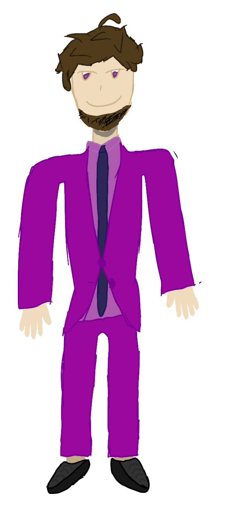
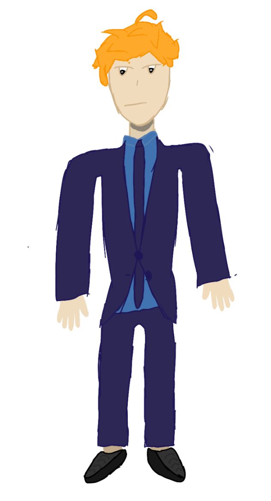

Zastanawiałeś się kiedyś, jak wygląda szkolna moda na najwyższym poziomie? Nasi dwaj wspaniali modele z chęcią zaprezentują najnowsze trendy prosto ze szkolnych korytarzy!

Strój nauczyciela to zazwyczaj wygoda i stonowane barwy... ale nasz pan profesor to prawdziwy kolorowy ptak! Zjawiskowy, fioletowy garnitur sprawia, że wnosi on mnóstwo pozytywnej energii i uśmiechu do szarego pokoju nauczycielskiego. Wygląda, jakby zaraz po kartkówce z matematyki miał poprowadzić wielką galę telewizyjną. Z takim dystansem do siebie i fantastycznym stylem, każda lekcja musi być czystą przyjemnością!

Uczeń to przecież wizytówka szkoły, a ten młody dżentelmen wziął to sobie do serca w 100%! Idealnie skrojony, granatowy garnitur i modnie ułożona grzywka sprawiają, że wygląda niczym młody prezes. Jego pełna skupienia mina sugeruje, że tuż po lekcji przyrody ma zaplanowane ważne spotkanie zarządu w sklepiku szkolnym. Pełen profesjonalizm i elegancja – z takim uczniem każda placówka jest skazana na sukces!